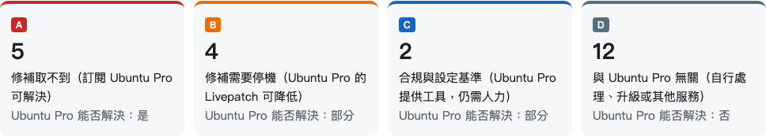
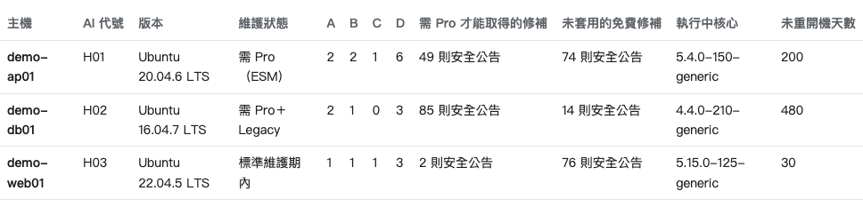
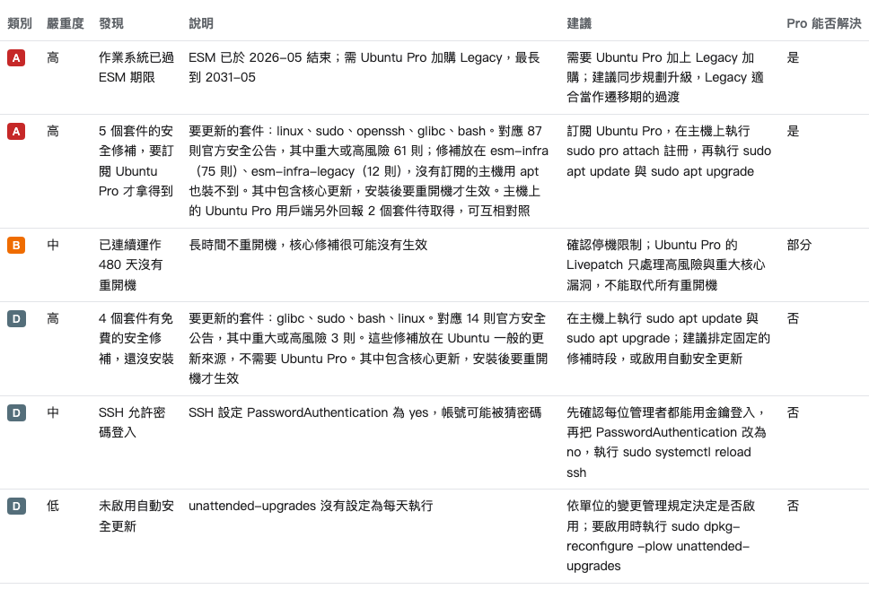
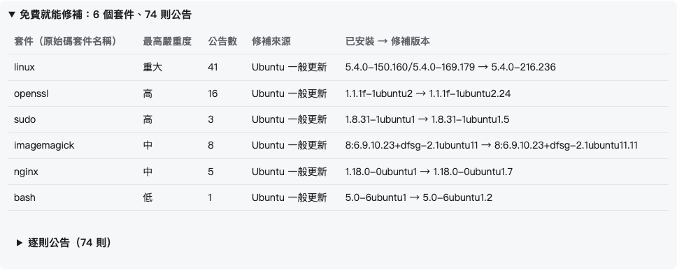

Ubuntu 主機資安健檢工具
使用者手冊
offline-ubuntu-healthcheck 0.5
2026 年 11 月
工具下載：https://github.com/ikusupuroa/offline-ubuntu-healthcheck
本工具不是 Canonical 的官方工具，與 Canonical 沒有隸屬關係，也沒有經過 Canonical 背書。Ubuntu 是 Canonical Ltd. 的商標。
目錄
- 這個工具做什麼
- 準備分析用的電腦
- 準備主機清單與 SSH 登入
- 收集資料並產生報告
- 看懂報告
- 交給 AI 分析
- 更新官方資料與常見問題
- 附錄：指令速查
第一次用，建議照第 2 章到第 5 章的順序做一遍。之後只要翻第 4 章與附錄的指令。
1. 這個工具做什麼
這個工具檢查 Ubuntu 主機，回答三個問題：
- 主機的版本還有沒有官方維護。
- 缺了哪些安全修補。
- 哪些缺口訂閱 Ubuntu Pro 就能補上，哪些跟 Ubuntu Pro 無關、要自己處理。
比對用的是 Canonical 官方公開的 OVAL 弱點資料。受檢主機上不必安裝任何東西，也不需要連網。
整個流程
各步驟在哪台電腦上做、資料怎麼流動，請看第 2 章的圖 1（下載與更新）和第 4 章的圖 2（掃描主機）。
會做與不會做的事
| 會做 | 不會做 |
|---|---|
| 讀取作業系統版本、已安裝套件、核心、開機時間、Ubuntu Pro 狀態、SSH 三項設定、防火牆狀態等系統資訊 | 不安裝套件、不改設定、不重啟服務、不執行 apt update、不做弱點利用或滲透測試 |
| 在你的電腦上比對官方弱點資料，產生報告 | 不收集主機名稱、IP、密碼、金鑰、使用者家目錄、防火牆規則、Pro 的帳號與合約資訊 |
2. 準備分析用的電腦
「分析用的電腦」是你拿來執行工具、產生報告的那台。它要能用 SSH 連到受檢主機；連不到也沒關係，可以改請主機管理者自己收集（第 4 章情況三）。只檢查分析電腦自己的話，也不需要 SSH（第 4 章情況一）。
2.1 需要什麼
- Ubuntu 或 macOS。Windows 目前沒有實測。
- Python 3.6 以上（Ubuntu 與 macOS 通常已內建），不必另外安裝套件。
git（建議）與ssh。
2.2 下載工具
從下載、更新到帶進封閉環境，整個過程如圖 1。2.2 與 2.3 節會逐步說明。
- ① 用
git clone下載工具，同時會帶回一份官方資料（本節步驟 1）。 - ② 執行
./hc update，向 Canonical 官方網站取得最新資料。連不到官方網站、但能連 GitHub 時，改用git pull（2.3 節）。 - ③ 執行
./hc update --list，確認資料日期在 7 天內。 - ④（選用）把整個
offline-ubuntu-healthcheck資料夾複製到隨身碟。 - ⑤ 在封閉環境的電腦上執行
./hc update --verify，確認檔案沒被改過或損毀。
在能上網的電腦上下載：
git clone https://github.com/ikusupuroa/offline-ubuntu-healthcheck.git cd offline-ubuntu-healthcheck
這樣下載會一起帶回一份 GitHub 上每天更新的官方弱點資料。第一次執行工具時，它會自動放進 data/ 資料夾，不需要再連網。
確認資料已經就位，並看看是哪一天的：
./hc update --list
每個版本會列出一行，「官方產生」是 Canonical 產生這份資料的時間。
git clone --depth 1。這兩種拿不到官方資料。沒有 git 的電腦，請到專案的 Releases 頁面下載 offline-ubuntu-healthcheck-full.zip，解壓縮後就有工具和最新的官方資料。2.3 要帶進封閉環境之前
到客戶現場或封閉網路做健檢，進場前在能上網的地方做這三件事：
更新到最新資料。能連到 Canonical 官方網站時：
./hc update
連不到官方網站、但能連 GitHub 時，改用：
git pull
確認日期在 7 天內：
./hc update --list
整個 offline-ubuntu-healthcheck 資料夾帶進去後，先核對檔案沒被改過或損毀：
./hc update --verify
每一行都是「一致」才算正常。
2.4（選用）安裝 OpenSCAP
工具內建比對功能，不裝也能用。分析電腦是 Ubuntu 的話，可以加裝 Canonical 文件示範的比對工具 OpenSCAP，裝了之後會自動改用它：
sudo apt install -y openscap-scanner # 24.04 以後 sudo apt install -y libopenscap8 # 22.04 以前
3. 準備主機清單與 SSH 登入
這一章只有「分析電腦可以用 SSH 連到受檢主機」時才需要。只檢查分析電腦自己，或不能用 SSH 的話，直接跳到第 4 章的情況一或情況三。
3.1 建立主機清單 hosts.txt
從範本複製一份：
cp hosts.example.txt hosts.txt
用文字編輯器打開 hosts.txt，每行寫一台主機：「代號、空白、帳號@IP」。
H01 admin@10.0.0.5 H02 ops@10.0.0.6 -p 2222
- 代號：報告上顯示的名字，只能用英文字母、數字與
. _ -，每台要不同。 - 帳號@IP：建議寫 IP。寫主機名稱的話，要這台電腦查得到那個名稱才行。
- SSH 不是 22 埠時，在後面加
-p 埠號。
hosts.txt 記著代號與 IP 的對照，請留在受檢單位，不要隨報告交出去。3.2 設定免密碼登入（SSH 金鑰）
工具會逐台自動登入，所以要先讓分析電腦不用輸入密碼就能登入每台主機。
看看分析電腦有沒有金鑰：
ls ~/.ssh/id_*.pub
出現 No such file 代表沒有，用下面的指令建立一把，問題都直接按 Enter：
ssh-keygen -t ed25519
把公鑰放到每台主機上，這一步會問一次那台主機的密碼：
ssh-copy-id admin@10.0.0.5
確認可以免密碼登入，看到 OK 就成功了：
ssh admin@10.0.0.5 'echo OK'
第一次連線會問要不要信任這台主機，確認 IP 沒錯後回答 yes。
3.3 要不要用 sudo
預設用一般權限就能檢查版本、套件、核心與 Ubuntu Pro 狀態。加上 --sudo 會多檢查三項：SSH 設定、防火牆、空密碼帳號。
./hc scan --sudo 需要主機上的帳號可以「免密碼 sudo」。不行的話，工具會自動改用一般權限，那三項在報告上列為「未能檢查」，不會被當成沒問題。
4. 收集資料並產生報告
依你的情況選一種。三種做法產生的報告完全一樣。
情況一：只想檢查分析電腦自己
要檢查的 Ubuntu 主機就是你正在用的這台。收集和分析都在這台完成，不需要 SSH，也不需要第 3 章的主機清單。
./hc local --sudo
--sudo 會詢問你這個帳號的 sudo 密碼。不加也能跑，只是 SSH 設定、防火牆、空密碼帳號三項會列為「未能檢查」。
只有分析電腦本身是 Ubuntu 時才能用。macOS 沒有 Ubuntu 的套件清單，可以用來掃別台主機，但不能掃自己。
情況二：分析電腦能用 SSH 連到主機（多台主機時建議）
在 offline-ubuntu-healthcheck 資料夾裡執行：
./hc scan hosts.txt --sudo
不需要 sudo 就把 --sudo 拿掉。
等它跑完。每台主機通常 3 到 15 秒。畫面會像這樣（實測輸出）：
開始收集 1 台主機（收集檔存放在 reports/2026-11-16-151406/collected，內含套件清單，請妥善保管） [1/1] H01：完成，3 秒 健檢完成：1 台主機，其中 1 台已過標準維護期 ------------------------------------------------------------ H01 20.04 需 Pro（ESM） A 2｜B 0｜C 1｜D 2｜需 Pro 178、免費可修 3 則安全公告 ------------------------------------------------------------ A＝訂閱 Ubuntu Pro 可解決 B＝要重開機（Livepatch 可部分解決） C＝合規工具 D＝與 Pro 無關 官方資料：focal（20.04），產生於 2026-11-15（1 天前），雜湊核對：一致 報告：reports/2026-11-16-151406/report.html ← 用瀏覽器打開
這段畫面的意思：H01 是 20.04，標準維護期已經過了；有 178 則安全公告的修補要訂閱 Ubuntu Pro 才拿得到，另外 3 則是免費的、只是還沒裝。A、B、C、D 是發現事項的類別，第 5 章會詳細說明。
用瀏覽器打開最後一行的 report.html。
一次掃描多台主機時，資料怎麼流動如圖 2。
- ① 把要檢查的主機寫進
hosts.txt（3.1 節），並設好免密碼登入（3.2 節）。 - ② 在分析電腦上執行
./hc scan hosts.txt --sudo。 - ③ 工具經 SSH 逐台登入，把
collect.sh送進主機執行。不安裝套件、不改設定（主機上會留下哪些紀錄見 4.3 節）。 - ④ 收集結果傳回分析電腦，主機上不會留下腳本或收集檔。
- ⑤ 在分析電腦上和
data/裡的官方資料比對，不必上網。 - ⑥ 報告與相關檔案存進
reports/日期時間/（4.2 節）。 - ⑦ 用瀏覽器打開
report.html，第 5 章說明怎麼看。
收集時，腳本經 SSH 送進主機執行，結果直接傳回分析電腦。主機上不會留下收集腳本或收集檔。
情況三：只能請主機管理者自己收集
把 collect.sh 這個檔案交給主機管理者（隨身碟、內部檔案分享都可以）。
請管理者在主機上執行，H01 換成這台的代號：
bash collect.sh --tag H01
要多檢查 SSH、防火牆、空密碼帳號時改用：
sudo bash collect.sh --tag H01
完成後，目前的資料夾會多一個 hc-H01-日期時間.tar.gz。
用 sudo 產生的檔案屬於 root，只有 root 能讀。複製出來之前，先把檔案的擁有者改成自己：
sudo chown $USER hc-H01-*.tar.gz
管理者把這個檔案交回給你。你在分析電腦上執行：
./hc report hc-H01-*.tar.gz
多台一起分析，就把檔案都列上去，或用 ./hc report hc-*.tar.gz。
4.1 報告表頭與去識別化
這些參數三種情況都能加：
| 參數 | 作用 |
|---|---|
--agency "受檢單位名稱" | 寫在報告表頭 |
--assessor "執行單位名稱" | 寫在報告表頭 |
--deidentify | 主機代號改成 H01、H02…，要交給雲端 AI 前使用（第 6 章） |
4.2 產出哪些檔案
每次分析都會在 reports/日期時間/ 產生：
| 檔案 | 用途 |
|---|---|
report.html | 報告，用瀏覽器打開 |
report.md | 同一份報告的文字版，可以修改後交付 |
findings.json | 結構化結果，交給 AI 分析用 |
oval-detail.json | 每則安全公告的完整比對明細 |
collected/ | 收集到的原始資料，含套件清單，請依單位的資料分級規定保管 |
4.3 主機上會留下什麼
用情況二（./hc scan）收集時，主機上不會留下收集腳本與收集檔。用情況三時，主機上會有 collect.sh 和產生的 hc-*.tar.gz，交回後請主機管理者刪除。用情況一時，收集檔只存在分析電腦的 reports/日期時間/collected/。
不論哪種做法，2026 年 11 月的實機測試發現，收集時其他程式會寫自己的紀錄：
- Ubuntu Pro 用戶端（
pro指令）會更新自己的記錄檔與快取。 - SSH 登入與 sudo 會寫進系統的登入紀錄（
auth.log、journal）。受檢單位事後可以從這些紀錄查到誰在什麼時候檢查過。
5. 看懂報告
報告分成五個部分加一個附錄。下面依序說明，範例畫面取自工具附的三台虛構主機（samples/demo-report/）。
5.1 摘要：A、B、C、D 四類

每一項發現都會歸到四類之一，分類的依據是「訂閱 Ubuntu Pro 能不能解決」：
| 類別 | 意思 | Ubuntu Pro 能不能解決 | 通常怎麼處理 |
|---|---|---|---|
| A | 修補拿不到：官方的修補只放在延伸維護（esm-infra、esm-apps），沒訂閱的主機用 apt 也裝不到 | 能 | 訂閱 Ubuntu Pro；同時規劃升級版本 |
| B | 修補要重開機才生效：裝了新核心卻沒重開機、很久沒重開機 | 部分 | 排定重開機；停機困難時評估 Livepatch（只處理高風險核心漏洞） |
| C | 沒有用 CIS／DISA-STIG 的自動稽核工具 | 部分 | 需要稽核證據時評估 USG，仍要人設定 |
| D | 跟 Ubuntu Pro 無關：免費修補沒裝、SSH 與帳號設定等 | 不能 | 機關資訊人員或維護廠商自己處理，多半當天就能做 |
「需不需要 Pro」是看官方資料寫的修補來源，不是從版本號推測。
5.2 主機總覽

| 欄位 | 怎麼看 |
|---|---|
| 維護狀態 | 「標準維護期內」不用擔心；「需 Pro（ESM）」代表標準維護已結束，要訂閱才有安全更新；「需 Pro＋Legacy」代表連 ESM 也結束了；「已無維護」只能升級 |
| A、B、C、D | 各類發現的項數 |
| 需 Pro 才能取得的修補 | 要訂閱才拿得到的安全公告則數 |
| 未套用的免費修補 | 免費、但還沒裝的安全公告則數。這個數字大，代表例行修補沒有在做 |
| 未重開機天數 | 超過 90 天會在 B 類提醒 |
5.3 發現事項：每一列怎麼讀

每台主機一張表，一列是一項發現。最重要的是「建議」欄，裡面寫了處理方式，大多附有可以直接執行的指令。
| 欄位 | 怎麼看 |
|---|---|
| 類別 | A、B、C、D，見 5.1 |
| 嚴重度 | 高、中、低。弱點相關的項目，只要有重大或高風險公告就是「高」 |
| 發現 | 一句話說明問題，例如「2 個套件有免費的安全修補，還沒安裝」 |
| 說明 | 要更新哪些套件、對應幾則安全公告、需不需要重開機 |
| 建議 | 怎麼處理。指令請先在測試環境確認，並依單位的變更管理規定執行 |
5.4 每一種發現代表什麼、怎麼處理
| 報告上的寫法 | 類別 | 代表什麼 | 怎麼處理 |
|---|---|---|---|
| 作業系統已過標準維護期 | A | 版本已過 5 年標準維護，沒訂閱就沒有安全更新 | 訂閱 Ubuntu Pro 並啟用 esm-infra；同時規劃升級 |
| 作業系統已過 ESM 期限 | A | 連 10 年的 ESM 也結束了 | Ubuntu Pro 加購 Legacy 當過渡，盡快升級 |
| 作業系統已無官方安全維護 | D | 所有維護都結束，或不是 LTS 版本 | 升級到仍在維護期內的 LTS 版本 |
| N 個套件的安全修補，要訂閱 Ubuntu Pro 才拿得到 | A | 這些套件的修補只放在延伸維護 | 訂閱後執行 sudo pro attach 註冊，再執行 sudo apt update 與 sudo apt upgrade |
| N 個套件有免費的安全修補，還沒安裝 | D | 修補已經在 Ubuntu 一般的更新來源，只是沒裝 | 執行 sudo apt update 與 sudo apt upgrade；包含核心時要重開機 |
| 已訂閱 Ubuntu Pro，但有 N 個套件的安全修補還沒安裝 | D | 已經付費，修補也拿得到，只是沒裝 | 同上 |
| 已安裝新核心，但機器還在跑舊核心 | B | 核心修補要重開機才生效 | 排定時段重開機；停機困難時評估 Livepatch |
| 系統標示需要重開機 | B | 有更新在等重開機 | 排定時段重開機 |
| 已連續運作 N 天沒有重開機 | B | 核心修補很可能沒有生效 | 確認停機限制，保留定期重開機的時段 |
| 未使用 CIS／DISA-STIG 基準的自動化稽核工具 | C | 沒有安裝 Ubuntu Security Guide（USG） | 需要設定基準的稽核證據時評估 USG |
| SSH 允許 root 直接登入 | D | root 帳號可以直接從網路登入 | 把 PermitRootLogin 改成 no，再執行 sudo systemctl reload ssh |
| SSH 允許空密碼登入 | D | 沒設密碼的帳號也能登入 | 把 PermitEmptyPasswords 改成 no，再 reload |
| SSH 允許密碼登入 | D | 帳號可能被猜密碼 | 確認每位管理者都能用金鑰登入後，把 PasswordAuthentication 改成 no |
| 主機防火牆（ufw）未啟用 | D | 主機本身沒有開防火牆 | 先確認網路層有沒有防火牆。要啟用時先執行 sudo ufw allow OpenSSH，再執行 sudo ufw enable，避免把自己鎖在外面 |
| 有 root 以外的最高權限帳號 | D | 有其他 UID 為 0 的帳號 | 依建議欄的指令找出帳號，確認用途，不需要就移除 |
| 有空密碼帳號 | D | 有帳號沒設密碼 | 依建議欄的指令找出帳號，設定密碼或鎖定 |
| 未啟用自動安全更新 | D | 沒有每天自動裝安全更新 | 依變更管理規定決定；要啟用時執行 sudo dpkg-reconfigure -plow unattended-upgrades |
| 有 N 個非 Ubuntu 官方來源的套件 | D | 第三方或來源不明的套件不在 Ubuntu 的修補範圍 | 盤點來源，向原廠確認更新方式 |
5.5 實例：照著報告修一台主機
以第 4 章那台 20.04 的 H01 為例，報告上有這一列：
| 類別 | 嚴重度 | 發現 | 說明 | 建議 |
|---|---|---|---|---|
| D | 高 | 2 個套件有免費的安全修補，還沒安裝 | 要更新的套件：ubuntu-advantage-tools、apport。對應 3 則官方安全公告，其中重大或高風險 1 則。這些修補放在 Ubuntu 一般的更新來源，不需要 Ubuntu Pro | 在主機上執行 sudo apt update 與 sudo apt upgrade…… |
意思是：這台有兩個套件已經有免費修補，只是沒裝。登入那台主機執行：
sudo apt update sudo apt upgrade
沒有訂閱 Ubuntu Pro 的主機，apt upgrade 只會裝免費的修補，A 類那 178 則仍然拿不到。裝完後重新健檢一次，D 類這一列就會消失。
5.6 明細：要更新哪些套件

每台主機的發現事項表下方有可以展開的明細，依情況最多三組：
- 免費就能修補：放在前面，套件不多時預設展開。這些是馬上就能處理的。
- 已訂閱 Ubuntu Pro，還沒安裝：主機已經訂閱，修補拿得到，只是沒裝。
- 要訂閱 Ubuntu Pro 才能修補：預設收合。
明細一列是一個套件，寫出最高嚴重度、對應幾則公告、修補來源（「Ubuntu 一般更新」是免費的來源，esm-infra、esm-apps 是 Ubuntu Pro 的延伸維護），以及「已安裝版本 → 修補版本」。再展開「逐則公告」可以看到每則安全公告（USN）的標題。
報告上的套件名稱是「原始碼套件」名稱，一個原始碼套件可能對應主機上好幾個實際安裝的套件，名稱不一定相同。例如報告寫 glibc，主機上看到的是 libc6。照建議欄執行 sudo apt upgrade 會一起更新，不必逐一對照。
5.7 其他段落
- 未能檢查的項目：收集時權限不足或主機沒有對應工具，不代表沒有問題。通常是沒有用 sudo。
- 比對引擎對照：用了
--engine both才會出現，兩個比對引擎的結果應該一樣。 - 四、建議處理順序：先處理「高」的項目，D 類的帳號與登入設定多半當天就能改。
- 五、檢查範圍與限制：說明這份健檢沒涵蓋什麼，交付報告時請一併說明。
- 附錄：資料來源：這次用的官方資料是哪一天產生的、檔案有沒有被改過。「與下載紀錄」要是「一致」。
6. 交給 AI 分析
報告是固定格式。如果想依單位的資安政策產出更完整的建議，可以把 findings.json 交給 AI，搭配本工具附的分析指引（skill）一起使用。分析指引就是 skill/offline-ubuntu-healthcheck/SKILL.md 這個檔案，裡面規定 AI 要怎麼讀資料、什麼話不能亂說、要輸出哪些段落。
6.1 先做兩件事
確認單位規定：機關使用生成式 AI 有相關規定，先問資訊單位能不能把健檢結果交給雲端 AI，或是要用機關內部的 AI。
產生去識別化的版本：主機代號會改成 H01、H02，報告表頭的受檢單位也會遮掉。
./hc report reports/日期時間/collected/*.tar.gz --deidentify
交給 AI 的是新產生的 findings.json（資料夾名稱結尾是 -deid）。
6.2 取得分析指引檔
- 工具資料夾裡的
skill/offline-ubuntu-healthcheck/SKILL.md。 - 或到專案的 Releases 頁面下載
offline-ubuntu-healthcheck-skill.zip，這是可以直接上傳到 AI 平台的壓縮檔。
6.3 做法一：一次性使用（任何 AI 平台）
不用安裝，每次開新對話時把兩個檔案一起上傳：
開一個新對話，上傳 SKILL.md 和 findings.json。
平台不接受 .md 檔時（例如 Claude 的官方支援清單沒有列 .md），把檔名改成 SKILL.txt 再上傳，或直接把內容貼進對話框。
輸入：
請依照 SKILL 檔的指引，分析 findings.json 的健檢結果。
機關內部自建的 AI 也是同樣做法。
6.4 做法二：做成固定的 skill
裝好之後，之後只要上傳 findings.json 並說「請分析這份健檢結果」，AI 就會自動套用指引。各平台的選單名稱常改版，以下是 2026 年 11 月查證時的做法，操作前請以官方說明為準。
Claude 網頁版與桌面版
到設定的 Capabilities，開啟「Code execution and file creation」（新版介面叫「Create and edit files」）。這一步一定要做，skill 才能用。
到 Customize → Skills，按「+」→ Create skill → Upload a skill，上傳 offline-ubuntu-healthcheck-skill.zip。
在 skill 清單裡把它切到開啟。
- 壓縮檔裡最上層必須是
offline-ubuntu-healthcheck/資料夾，裡面放SKILL.md。Releases 提供的壓縮檔已經是這個結構；自己壓縮時，要壓整個資料夾，不是只壓檔案。 - 企業版（Team、Enterprise）：管理員可能關閉了自行上傳。管理員可以在組織設定直接派發給全組織。
- 免費方案能不能用，官方兩份說明寫法不一致，未確認。
- 官方說明：https://support.claude.com/en/articles/12512180-using-skills-in-claude
Claude Code
把 skill/offline-ubuntu-healthcheck 整個資料夾複製到下面其中一個位置：
| 範圍 | 放置位置 |
|---|---|
| 只給自己用（所有專案） | ~/.claude/skills/offline-ubuntu-healthcheck/SKILL.md |
| 給某個專案的所有成員用 | 專案資料夾/.claude/skills/offline-ubuntu-healthcheck/SKILL.md |
mkdir -p ~/.claude/skills cp -r skill/offline-ubuntu-healthcheck ~/.claude/skills/
官方說明：https://code.claude.com/docs/en/skills
ChatGPT
ChatGPT 有 Skills 功能，遵循同一套 skill 格式。官方說明目前寫的適用方案是 Business、Enterprise、Healthcare、Edu，Plus 與免費方案未確認。
到 Skills → Create → Upload from your computer，上傳 offline-ubuntu-healthcheck-skill.zip。上傳後 ChatGPT 會先掃描，通過才能用。
工作區管理員要先開啟「Enable skills」與「Enable skill uploading」。
以上依官方說明的摘要整理，尚未實測。官方說明：https://help.openai.com/en/articles/20001066-skills-in-chatgpt
Gemini
Gemini 網頁版與 App 已經從 Gems 改成 skills。
到 Customize → Skills → Create → Create manually。
名稱填 offline-ubuntu-healthcheck，描述與指示分別貼上 SKILL.md 開頭的 description 與「# Ubuntu 健檢結果分析指引」以下的內容，再按 Create。也可以直接上傳 SKILL.md 匯入。
Gemini CLI 的放置位置：自己用放 ~/.gemini/skills/，專案用放 專案資料夾/.gemini/skills/。
官方說明：https://support.google.com/gemini/answer/18560919 、https://geminicli.com/docs/cli/skills/
6.5 AI 會給你什麼
依分析指引，AI 會依序輸出：三句話總結、處理清單（含優先順序、要不要停機、要不要採購）、Ubuntu Pro 能解決的部分、Ubuntu Pro 解決不了的部分、維護責任建議、需要人工確認的事。
7. 更新官方資料與常見問題
7.1 更新官方資料的方法
| 情況 | 做法 |
|---|---|
| 能連 Canonical 官方網站（建議） | ./hc update |
| 只能連 GitHub | 用 git 下載的：git pull；不是用 git 下載的：./hc update --from github |
| 完全不能上網 | 在能上網的電腦更新後，把整個資料夾帶進去，再執行 ./hc update --verify |
| 只更新部分版本 | ./hc update --releases 20.04,22.04 |
| 使用自己保管的資料 | 在指令後面加 --data 資料夾路徑 |
GitHub 上的資料是本專案每天從 Canonical 官方網站取得的副本，檔案沒有修改過，下載後一樣會核對內容與 SHA-256。
7.2 常見問題
Q：出現「REMOTE HOST IDENTIFICATION HAS CHANGED」或「Host key verification failed」
這台主機的識別碼和分析電腦上次記下的不同。常見原因是主機重灌，或 IP 換給了另一台機器。先向主機管理者確認是同一台、而且確實重灌過，再刪掉舊紀錄並重新登入一次：
ssh-keygen -R 10.0.0.5 ssh admin@10.0.0.5 'echo OK'
SSH 不是 22 埠時，紀錄的寫法不同，例如 2222 埠要這樣刪、這樣登入：
ssh-keygen -R "[10.0.0.5]:2222" ssh -p 2222 admin@10.0.0.5 'echo OK'
無法確認原因時不要刪，請先通報資安人員。
Q：出現「找不到主機清單 hosts.txt」
還沒建立主機清單，照 3.1 節做。
Q：出現「Permission denied」
帳號或金鑰不對，照 3.2 節確認 ssh 帳號@IP 'echo OK' 能不用密碼登入。
Q：出現「Could not resolve hostname」
分析電腦查不到這個主機名稱，hosts.txt 改寫 IP。
Q：用了 --sudo，SSH 設定、防火牆還是「未能檢查」
那台主機的帳號不能免密碼 sudo，工具自動改用了一般權限，畫面上會有說明。可以請管理者用情況三的 sudo bash collect.sh --tag 代號 收集。
Q：畫面說官方資料超過 7 天
照 7.1 節更新。不能上網時照樣可以分析，只是之後公布的弱點不會列入，報告上也會註明。
Q：報告上數字跟主機上 pro security-status 不一樣
報告算的是「安全公告則數」，pro security-status 算的是「套件數」，單位不同。兩邊應該同時為 0 或同時大於 0。
Q：檢查的是 LXD 或 Docker 容器
容器和主機共用核心，B 類（核心、重開機）的結果不準。
8. 附錄：指令速查
| 要做的事 | 指令 |
|---|---|
| 下載工具（含官方資料） | git clone https://github.com/ikusupuroa/offline-ubuntu-healthcheck.git |
| 看官方資料日期 | ./hc update --list |
| 更新官方資料 | ./hc update 或 git pull |
| 核對資料沒被改過 | ./hc update --verify |
| 檢查這台電腦自己 | ./hc local --sudo |
| 建立主機清單 | cp hosts.example.txt hosts.txt |
| 用 SSH 收集並分析 | ./hc scan hosts.txt --sudo |
| 主機管理者自己收集 | sudo bash collect.sh --tag H01 |
| 分析交回來的收集檔 | ./hc report hc-*.tar.gz |
| 產生給 AI 用的去識別化版本 | 原本的指令後面加 --deidentify |
| 看完整參數說明 | ./hc scan -h、./hc report -h |
授權：工具程式碼採用 Apache License 2.0。官方 OVAL 資料的著作權屬於 Canonical Ltd.，授權 CC BY-SA 4.0，本專案原樣轉存、未經修改。